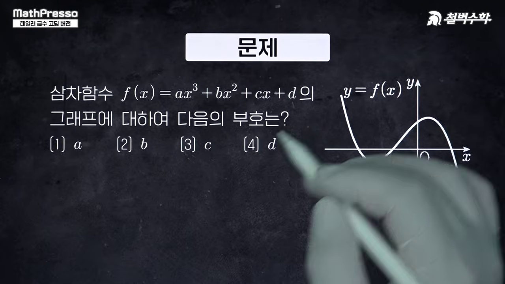
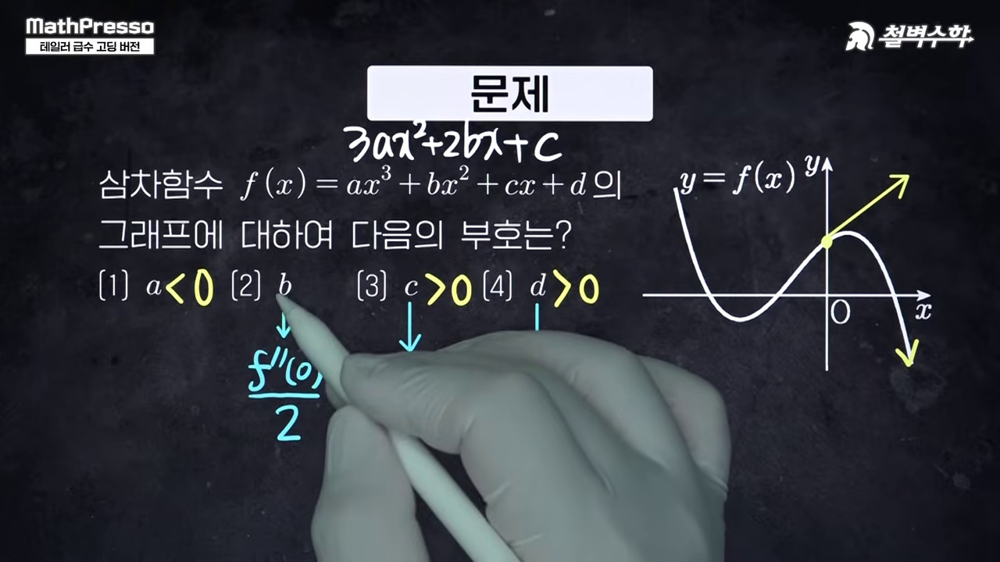
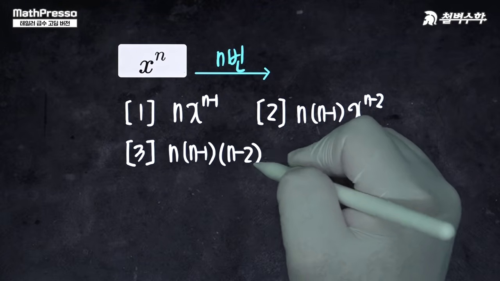
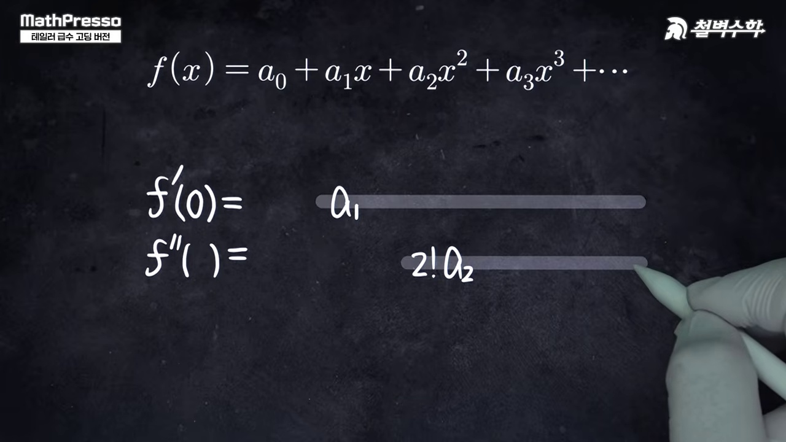
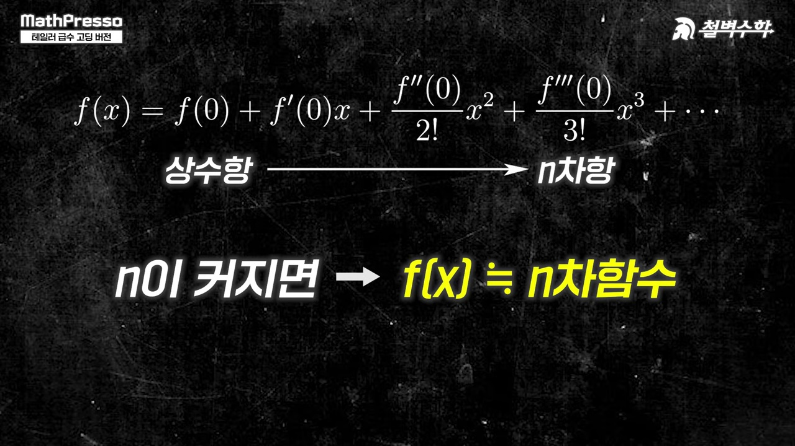

"초월함수와 다항함수는 완전히 다른 세계일까?"
미분계수를 하나씩 일치시키며 초월 곡선에 무한히 밀착하는 다항식 근사의 신세계:
1차 접선 근사 · 2차 곡률 포물선 · $n!$ 계수의 탄생 원리 · $e^x, \sin x, \cos x$의 매클로린 급수와 오일러 공식을 실시간 차수 슬라이더로 탐구합니다.
초월함수를 다항식으로 근사하는 테일러 급수의 철학과 발상의 출발점을 소개합니다.

x=0에서의 접선 y = f(0) + f'(0)x가 가장 단순한 1차 다항식 근사임을 시각적으로 확인합니다.

2계 도함수 f''(0)를 일치시키며 곡률까지 똑같은 포물선 P2(x)를 유도합니다.

x^n을 n번 미분할 때 생기는 n! 계수를 상쇄하기 위해 분모에 n!이 붙는 필연적 원리를 밝힙니다.

미분해도 자기 자신이 되는 e^x의 아름다운 무한 다항식 전개식을 완성합니다.
0, 1, 0, -1이 순환하며 홀수 차수만 남는 사인함수의 우아한 교대급수를 분석합니다.

짝수 차수 항들로 구성되어 완벽한 우함수 대칭을 이루는 코사인 급수를 확인합니다.
e^{ix} = cos x + i sin x로 이어지는 수학사 최고의 공식을 조망하며 수업을 마무리합니다.
1. 테일러 다항식 $P_n(x)$의 계수 결정 원리
다항식 $P(x) = c_0 + c_1 x + c_2 x^2 + \cdots + c_n x^n$이 $x=0$에서 $f(x)$와 $n$계 도함수까지 완벽히 일치하려면:
$$P^{(k)}(0) = k! \cdot c_k = f^{(k)}(0) \implies c_k = \frac{f^{(k)}(0)}{k!}$$따라서 매클로린 급수는 다음과 같이 정의됩니다:
$$f(x) = \sum_{k=0}^{\infty} \frac{f^{(k)}(0)}{k!} x^k = f(0) + f'(0)x + \frac{f''(0)}{2!}x^2 + \frac{f'''(0)}{3!}x^3 + \cdots$$2. 오일러 공식 $e^{ix} = \cos x + i \sin x$의 증명
$e^z$의 테일러 급수에 $z = ix$를 대입하면 $i^2 = -1, i^3 = -i, i^4 = 1$에 의해 실수부(짝수차수 $\cos x$)와 허수부(홀수차수 $\sin x$)로 정확히 분리됩니다!
__MANIM_CODE_26__